A special digital gift for...
Est. 2000 • Classic & Elegant
(Klik tombol musik di kiri bawah untuk suasana terbaik)
Hint: Tahun kelahiran Mbak Naila
kamu lahir di awal milenium tumbuh bersama perubahan zaman dan belajar bahwa hidup bukan tentang seberapa cepat melangkah tetapi tentang bagaimana agar tetap menjadi diri sendiri di tengah dunia yang secara terus menerus berubah klasik,semoga usia baru ini membawa keberanian dan kepercayaan untuk mengejar impian ketenangan dalam setiap langkah serta kebahagiaan yang selalu menemukan jalan pulang kepadamu.
""You are not just growing older, you are growing into the best version of yourself." 🤍"
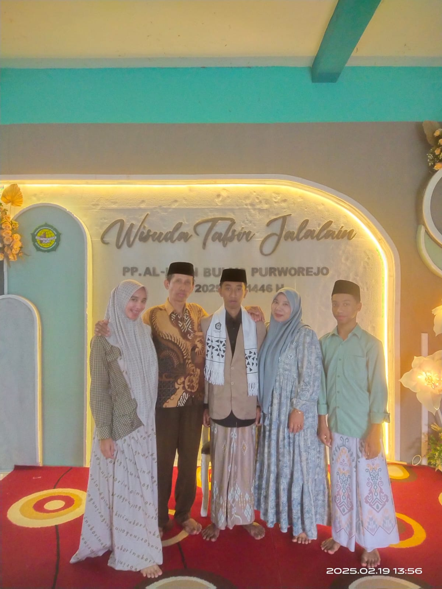
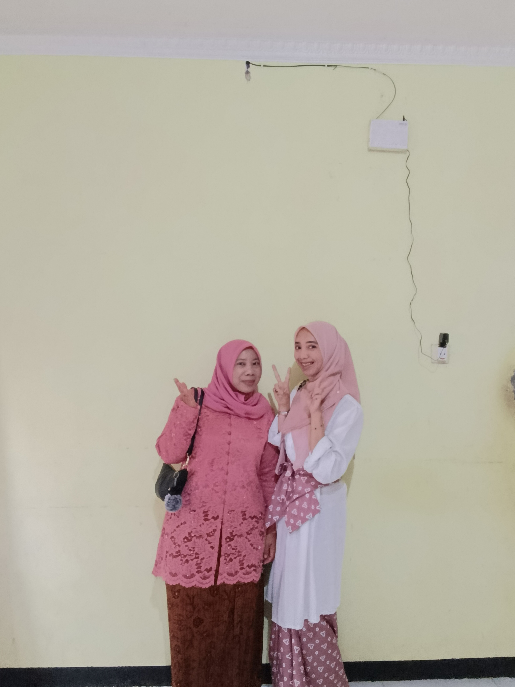
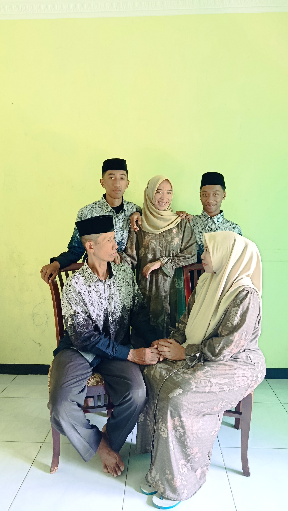
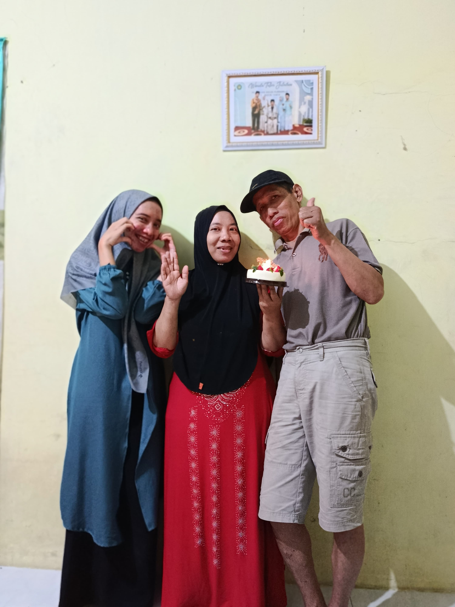
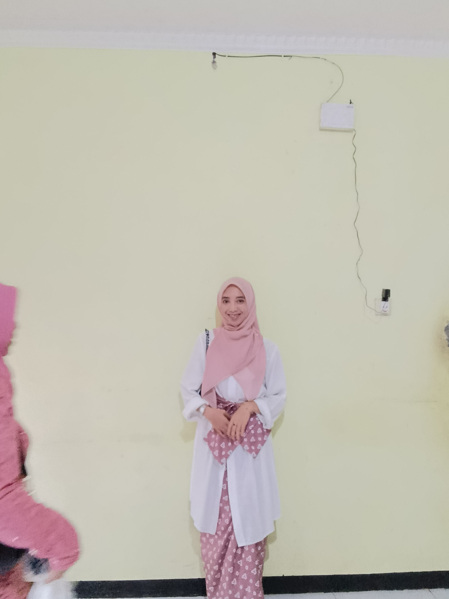
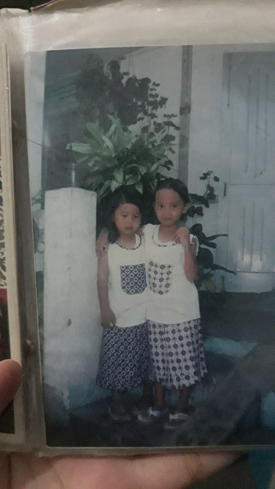
Beberapa momen yang terekam dalam bingkai waktu.
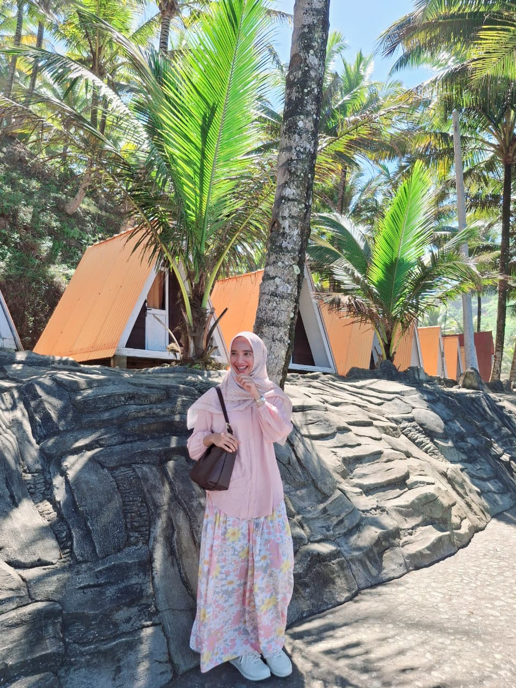
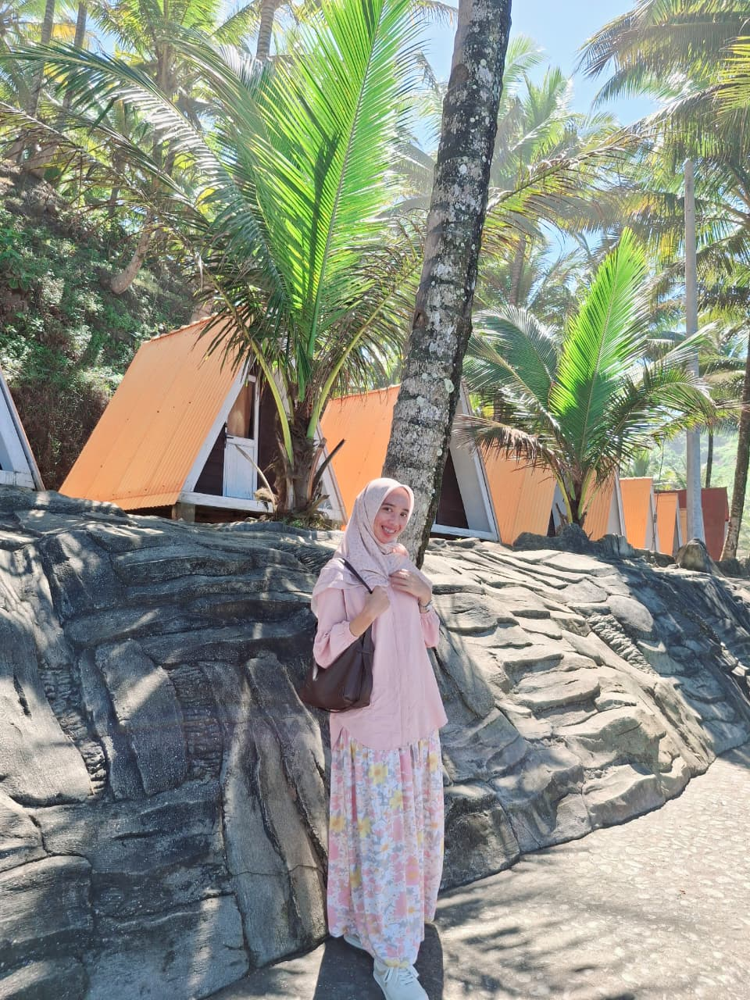
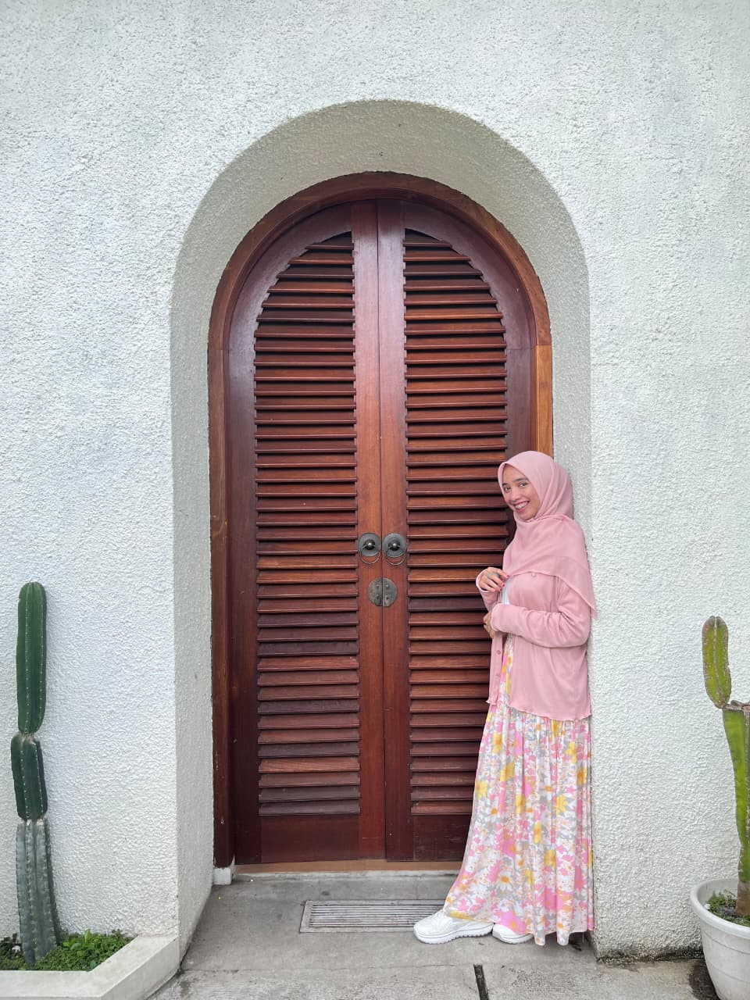
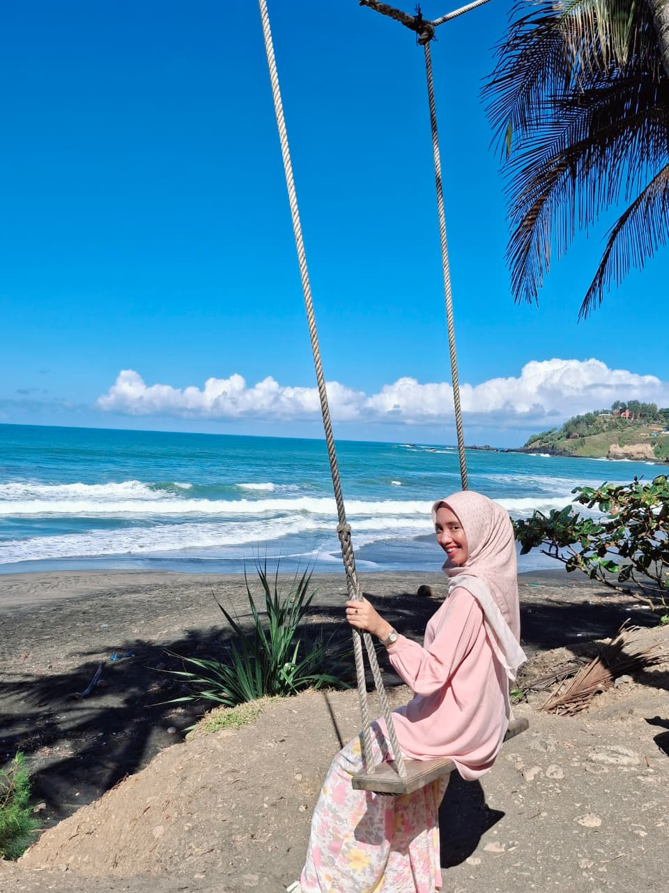
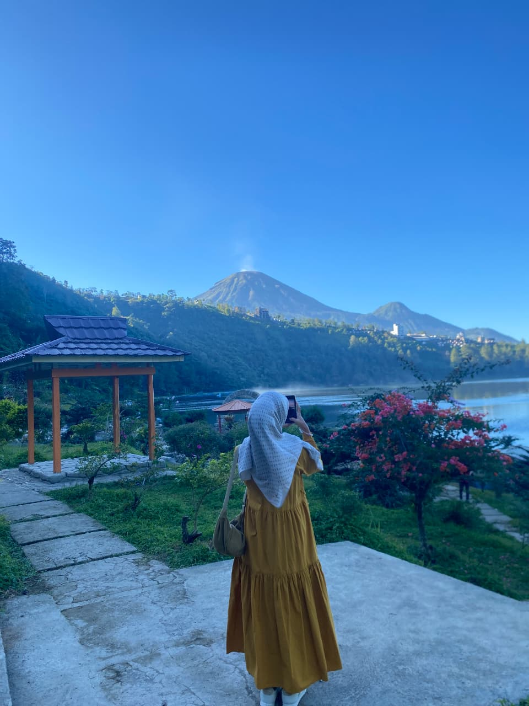
Klik kotak kado ini untuk membuka pesan!
Selamat Ulang Tahun yang ke-26, Mbak Naila! 🎂✨
Selamat ulang tahun yang ke-26, Mbak Naila! 🎉🤍 Tidak terasa waktu berjalan begitu cepat. Terima kasih karena selama ini sudah menjadi sosok kakak yang penuh kesabaran, perhatian, dan selalu berusaha menguatkan orang-orang di sekitarmu. Mungkin perjalanan hidupmu tidak selalu mudah, tetapi aku percaya setiap langkah yang kau jalani tidak pernah sia-sia. Allah melihat setiap lelah, setiap doa yang kau sembunyikan, dan setiap kebaikan yang kau lakukan tanpa berharap balasan. Semoga di usia yang baru ini Allah memberikan kesehatan yang sempurna, umur yang penuh keberkahan, rezeki yang halal dan melimpah, hati yang selalu tenang, serta kebahagiaan yang datang dari arah yang tak pernah disangka. Teruslah menjadi Mbak Naila yang baik hati, penyayang, dan selalu sabar. Jangan pernah ragu untuk bermimpi, karena kamu pantas mendapatkan semua hal baik di dunia ini. Terima kasih sudah menjadi kakak terbaik. Aku selalu bangga memilikimu. ❤️ Happy 26th Birthday, Mbak Naila! 🎂✨.
"Pejamkan mata sejenak. Ucapkan semua doa dan harapan terbaikmu kepada Allah. Percayalah, setiap kesabaran yang selama ini kau tanam tidak akan pernah sia-sia."
Bimsalabim!
Di usia yang baru ini, semoga setiap doa yang diam-diam kau simpan menjadi kenyataan. Semoga setiap air mata berganti senyum, setiap lelah berubah menjadi berkah, dan setiap kesabaran dibalas dengan kebahagiaan yang tak pernah habis.
Happy 26th Birthday!
Made with FARIS (ADIKMU)